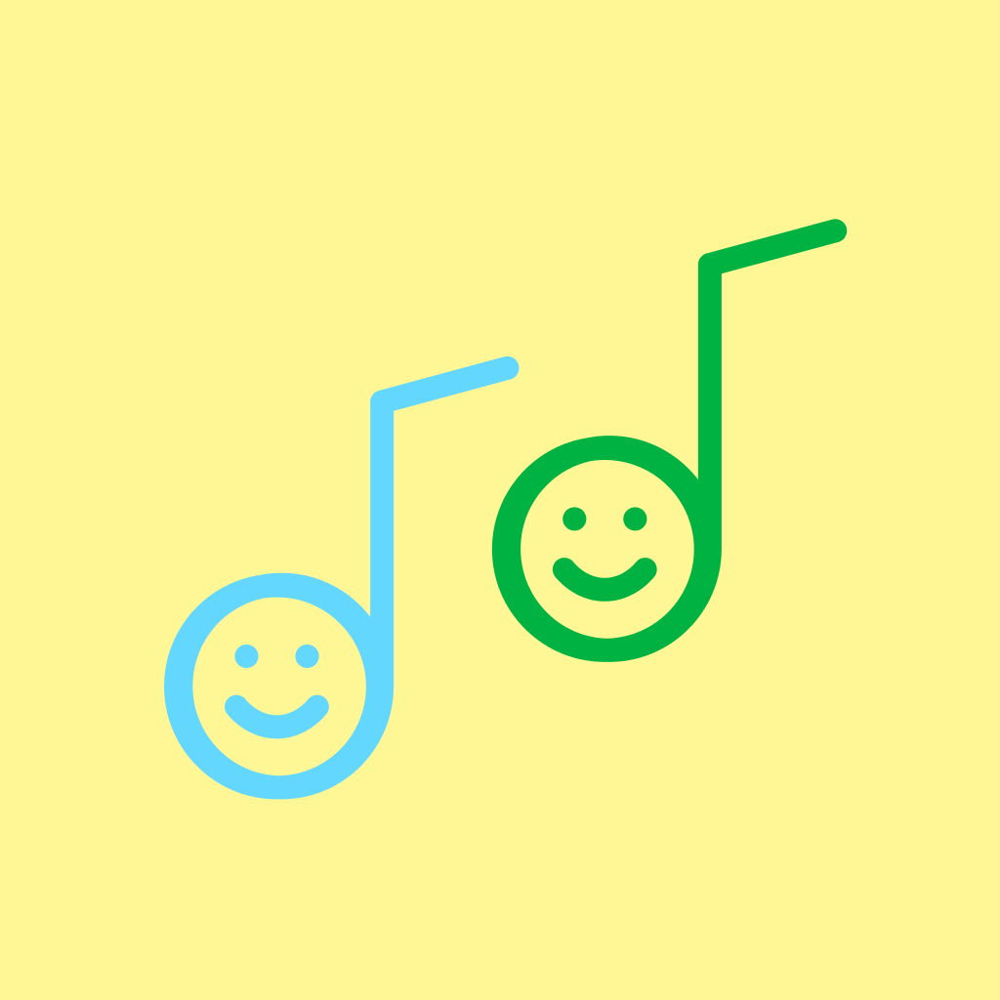

Emojio Paint Composer
Play
Random
Clear
Share
Tempo in beats per minute
Active
Choose Your Sticker
Are you sure?
Yes!
No
Share Your Song
Copy this code to save or share your song. Paste a code below to load one.
Copy Song Code
Load Song From Code
Close